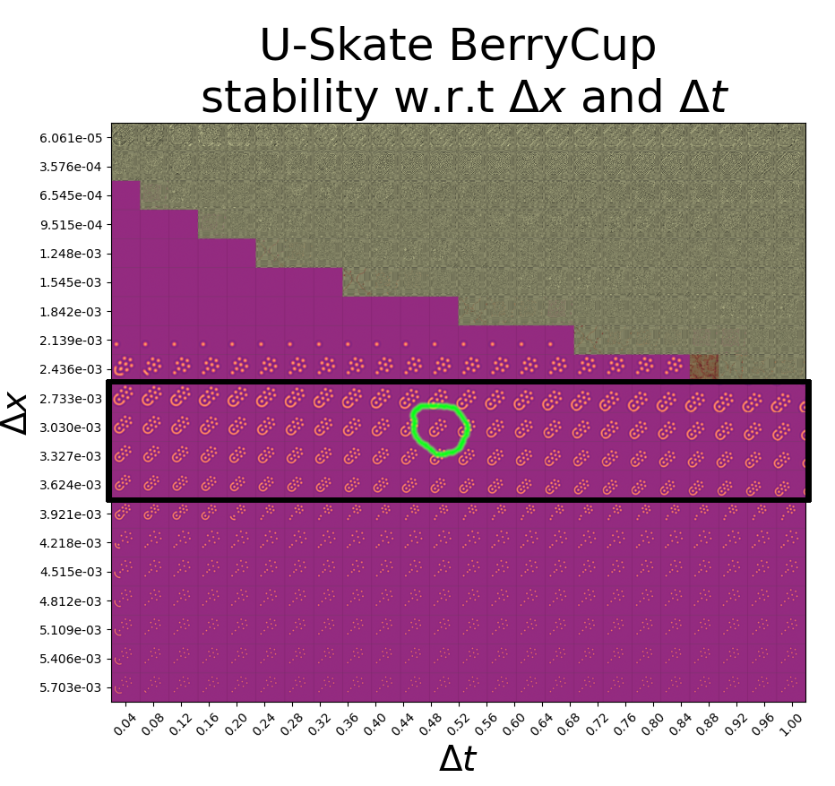

The Courant-Friedrich-Lewy condition
Or: you have to step before you can run.
(at a rate of less than 1 space unit per time unit)

Persistence map for the "Berry Cup" glider pattern in the U-Skate region of a Gray-Scott reaction-diffusion system.
Let's assume the circled glider in the persistence map corresponds to the CFL threshold condition.